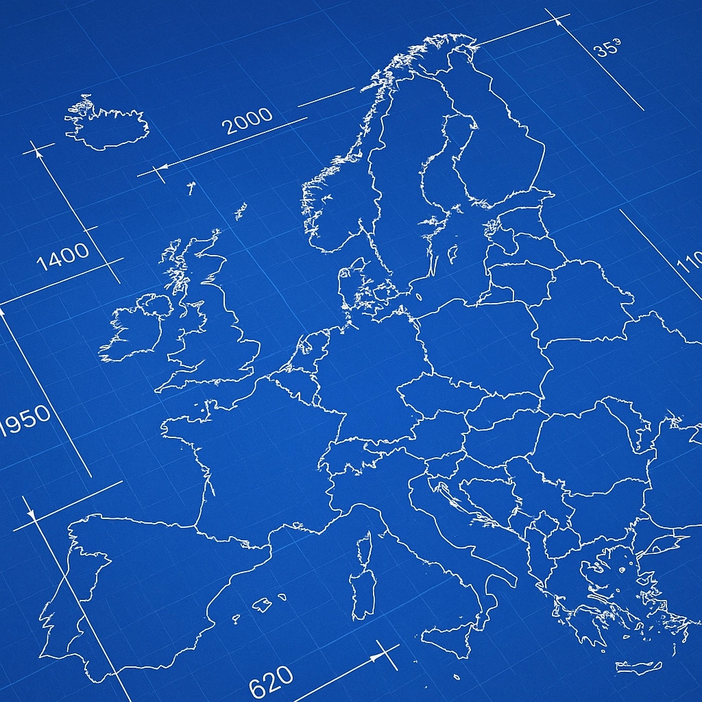
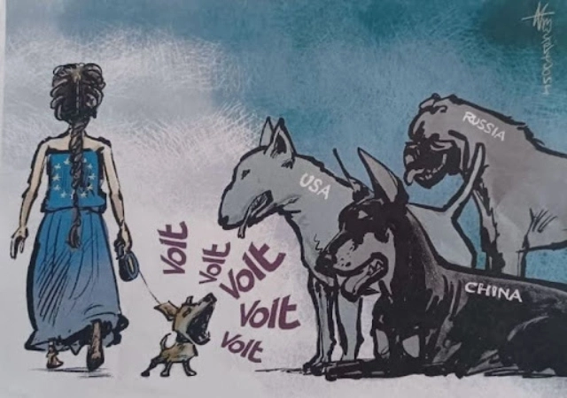

What is "jumpstartEU"? The verb "jumpstart" translates to:
(1) (vehicle) restart a car with jumper cables, for example: to jump-start a car, (2) (figurative, eg, revitalise a project or an economy) relaunch it properly, restart, give new momentum – for example : to jump-start the economy.
This is exactly what the European Union needs and the idea of “jumpstartEU”, a personal initiative which I'm planning to eventually integrate and grow within Volt.
Imagine Europe if the EU hadn't stalled
No unanimous thumbs up for the EU-US trade deal
Instead of an economic and geopolitical block that could stand its ground next to the US and China, national governments for decades have stalled reforms of the European Union. They preferred kicking the can down the road. And we just have reached the end of it. What now? Is the "Union of the Willing" the best Europe we can come up with, because no government is "willing" to admit: we would individually be less important, but together we would be stronger.
We currently witness, how, individually, we can be coerced into 5% NATO defence spending because each national government prefers paying 27x for the same thing rather than working towards a joint European military. Individually, we have to accept lopsided trade deals, because each national government prefers preserving export markets rather standing strong and integrating our internal market to compensate for potential tariffs. And I'm not even talking about the equivalent of half a soccer team flying to peace negotiations.
Our Union could be everything we wanted it to be. If we figured out how to jumpstart the European project.
Democracy is like open-source
I think political systems are similar to open-source projects. Both require contributions to function: A donation. A vote. Getting involved. Both need skilled maintainers, if not visionaries, who advance a roadmap and evolve a project in a changing digital or political landscape.
Unfortunately, both contributions and maintainers are missing in the European project today. Worse, millions are invested to make the EU fail while European leadership has to kowtow to both national governments and foreign powers. Just as a software without contributions and maintainers risks to be taken over or stop working altogether, the European Union is also at a crossroads.
We can continue to watch as the foundations of the European Union erode. Or we can become active and figure out how to get the European project back on track. This is the idea of jumpstartEU which wants to address both shortcomings:
(1) collect significant contributions that finance projects to raise the awareness for the importance of the European Union in the population and demand reforms at the ballot box and
(2) find the key maintainers that can influence the European political agenda, hold national and European political leadership accountable and drive the narrative of what the EU has to become.
Europe needs new and sustained momentum
European election campaign 2024 (Photo: Thomas Lambert)
jumpstartEU is a paneuropean initiative and creative roadmap. It does not wait to only enter Parliament but wants to influence the EU agenda by being a vocal and resourceful opposition to a Commission dominated by member state and particular interests. It’s the missing link between grassroots and political action.
jumpstartEU aims to grow a network to challenge the status quo of today’s European Union and seek funding for cross-border initiatives to push the needle towards reforming the European Union by 2029. Like when jumpstarting a car, it will provide the breakers and power to re-energize the European project.
jumpstartEU has a seed and growth phase. A bit like a startup. In the seed phase, I'm looking for the initial funding to build a network, ideally across as many member states as possible, as well as a large enough following and profile on EU reforms that can help to scale-up in the growth phase.
If you want to help with ideas, your network or contribute to "charging" to the jumpstartEU battery:
jumpstartEU is in seed stage until spring 2026. Followers are LinkedIn only. Funding so far received from 2/27 countries.
Initiatives
What specifically do I want to do within jumpstartEU? Here are the first projects on my roadmap I would love to work on (names are placeholders for now; some ideas will stay in "stealth mode" and are not yet on the list).
Serializing ECIs
European Citizens' Initiatives (ECI) require one million signatures across Europe within 12 months for the European Commission to consider a topic. It is an underused instrument of participation that, if used methodically, citizens could utilise to influence the European legislative agenda. Imagine you built a mailing list with one million EU citizens across the continent willing to sign ECIs you suggest. On change.org you sign but change nothing. How about every initiative you want to support and sign making it to into the legislative cycle?

EU blueprint
You often hear chatter of a federal Europe? We also agree that we're not the United States (not only in name). We're even talking about transnational lists, but I have the feeling nobody has given much thought how all of these things are going to actually work in practice. It's easy to criticise, but making a better proposal for EU decision making, functioning of the institutions and campaigning across borders are rare. What if we had such a proposal? An EU blueprint! To show the way for governments. If we build it, they will come, look and maybe even adopt it.

Proudly European
Coca Cola, Hollywood, a national anthem before every event: the US knows how to market itself. The European Union? Not so much - remember "You are EU"? The EU is a bureaucratic behemoth trashed by national governments on every occasion. Acceptance of the European Union may be at an all-time high, but it's hard to fall for a Union of paragraphs instead of a Union of hearts. If Viktor Orban can plaster Hungary with "EU is bad" posters, can't we do the opposite? With a lot more heart, taste and creativity to build a positive image of the European Union. The more citizens understand the EU and its importance, the harder it will become to ignore European reforms. We have the collective creativity and diversity, if someone provides a budget, I am sure, we will be surprised how much pressure citizens will create for reforming the EU.
Related blog posts
If Germany can live with Eurobonds, Denmark can pave the way for EU military
(Sven Franck, ) After the staccato of docile statements from EU and national leaders on Venezuela, Trump has its eyes firmly set on Greenland. Denmark, meanwhile, refused EU and member states military support months ago. With reality biting, isn't it time to reconsider? Read the article.
First we take Maduro, then we take Greenland?
(Sven Franck, ) With the US not being coy about its objections to a United Europe, member states having nuclear arms and limiting free speech, one has to wonder when Denmark will loose Greenland or helicopters will exfiltrate Emmanuel Macron after Marine LePen is declared ineligible for the 2027 presidential elections. Are we ready for MAGA-foreign policy? Read the article.